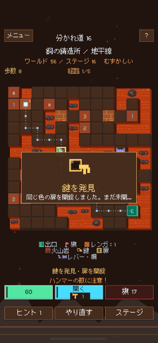
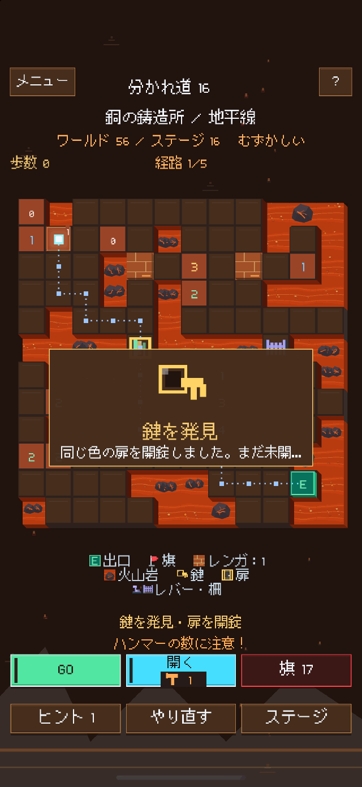
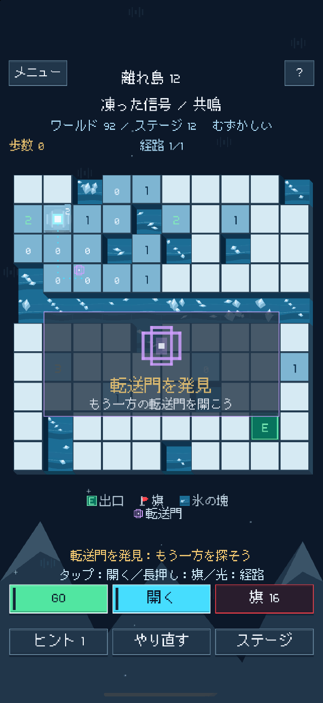

01
道を考える
数字を読んで地雷をマークし、安全なルートを見つけよう。
Google Playで配信中
数字をヒントに地雷に旗を立て、出口までの安全な道を見つけよう。道を開けば、光がその先へ進みます。


Androidで配信中
数字のヒントを読み、地雷を見つけて安全な道を作り、小さな光をさまざまなパズル世界へ導こう。
数字を読んで地雷をマークし、安全なルートを見つけよう。

鍵やポータル、障害物が新しい挑戦を生み出します。

まずは無料の60パズルから。続きは必要に応じてアンロックできます。
Lumen Mine · YouTube
ゲーム紹介動画でパズルの仕組みや世界観をチェックしましょう。
最初の3ワールドは無料で遊べます。アプリ内で一度購入すると、全300ワールド、合計6,000問をプレイできます。